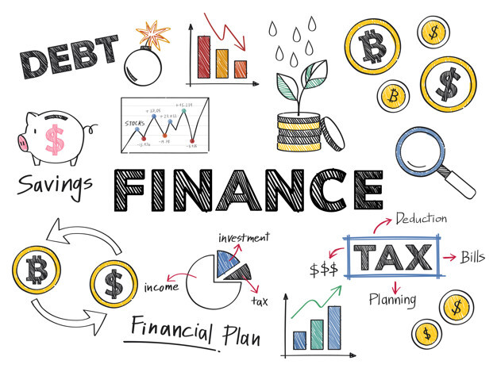

Une analyse de certains sujets tombés ces dernières années.
Prédire des sujets à venir en imaginant à l'avance comment traiter votre futur sujet.
Derrière des libellés très variés (crise des subprimes, jeunes investisseurs imprudents, finance durable, monnaie numérique, devise forte ou faible), l'examen pose toujours la même question de fond.
- 2022Subprime crises, an endlessly repetitive cycle?
- 2022To what extent is consumer protection needed regarding stock markets?
- 2023To what extent has sustainable finance become essential in the corporate world?
- 2024To what extent is digital currency the future of society?
- 2025Why do governments choose to have a strong or a weak currency?
Risk, protection and the changing face of money: the recurring logic of Finance topics
Over four sessions, the Finance topics look very different on the surface, yet they rest on one recurring idea: money and financing are never neutral or stable, and every innovation or crisis raises the same questions about risk, protection and regulation. Whether the text deals with the subprime crisis, reckless young investors, sustainable finance, digital currencies or exchange-rate policy, the examiner is really asking the candidate to weigh opportunity against stability. Recognising this common thread is the best way to prepare, because it turns five different questions into one solid base of knowledge.
The first recurring angle is risk and the cycle of crises. The subprime question and the warning about young investors point to the same lesson: financial markets regularly create bubbles, and easy credit or speculation can end in painful losses. The knowledge to master here is simple but powerful: how a crisis spreads, from cheap credit to excessive risk-taking and then to collapse; the idea of systemic risk, when one failure threatens the whole system; and the role of central banks and regulators. A useful argument that works across years is that markets are powerful but short-sighted, so they need supervision to stay healthy.
The second recurring angle is protection. Several texts ask, directly or not, who should be protected: small investors, ordinary consumers or the wider economy. The key ideas are the role of financial watchdogs, the danger of selling complex products such as crypto-assets or leveraged loans to people who do not understand them, and the balance between the freedom to invest and the duty to inform. A reusable position is that protection should not kill innovation, but that transparency and clear information are non-negotiable.
The third recurring angle is the transformation of money itself. Digital currencies, central bank digital currencies (CBDCs) and the question of strong or weak currencies all explore how the very nature of money is changing. Candidates should be able to distinguish volatile cryptocurrencies from state-backed CBDCs, explain how a strong currency helps importers but hurts exporters and vice versa, and describe how interest rates and monetary policy steer the economy. The classic argument is that digital money can make payments cheaper and faster, but raises new concerns about privacy, security and the future role of banks.

The fourth recurring angle is the growing link between finance and sustainability. The sustainable-finance text shows that investors now judge companies on environmental, social and governance (ESG) criteria, not only on profit. The useful notions are green bonds, sustainability-linked loans and the idea that capital increasingly flows towards responsible firms, while companies with weak ESG records may pay more to borrow. Finance, in short, is becoming a tool for transition.
What ties everything together is a single tension that the candidate can use whatever the wording: the conflict between innovation, freedom and profit on one side, and stability, protection and responsibility on the other. A strong answer almost always presents both sides, then takes a measured position, usually that innovation is welcome but must be matched by sound regulation, clear information and long-term thinking.
A few practical reflexes help across all Finance subjects. Always define the financial mechanism in simple terms, whether it is a leveraged loan, a CBDC or an exchange rate. Always name the actors involved: companies, investors, banks, regulators and governments. Always mention both a benefit and a risk. And always end with the role of regulation, because in finance the recurring conclusion is that markets need rules.
Finally, candidates should remember that history rhymes. The 2008 crisis, today's fears about risky lending and warnings about speculative investors all repeat the same story. Showing awareness that crises are partly cyclical, and that their lessons are often forgotten, is exactly the kind of personal knowledge the exam rewards.